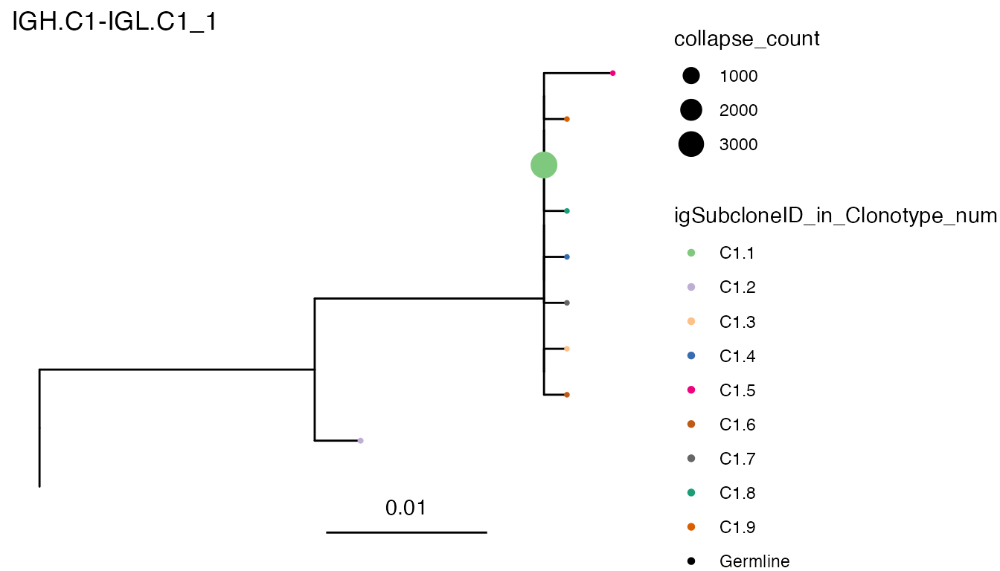
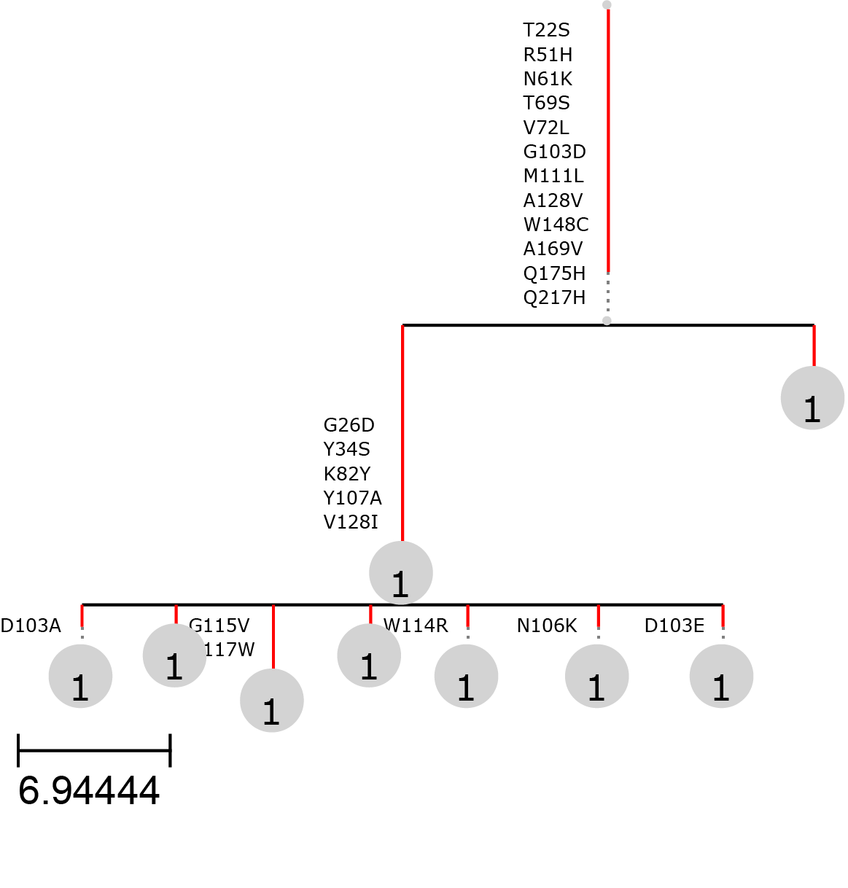

vignettes/articles/build_BCR_phylogenies.Rmd
build_BCR_phylogenies.RmdThe generation of diversity in B cell receptors (BCRs) is a cornerstone of the adaptive immune system. Through mechanisms such as V(D)J recombination and somatic hypermutation (SHM), B cells are able to produce a vast repertoire of antigen-specific receptors. This process is most active in germinal centers (GCs), transient microanatomical structures within secondary lymphoid organs where B cells undergo rapid proliferation, affinity maturation, and selection.
In the context of B cell neoplasms—such as follicular lymphoma (FL), diffuse large B-cell lymphoma (DLBCL), and chronic lymphocytic leukemia (CLL)—tumor clones often originate from B cells that have undergone GC-like processes. These malignant cells retain the molecular machinery for SHM and continue to diversify and evolve, sometimes in response to microenvironmental pressures or therapy.
Phylogenetic analysis of BCR sequences provides a powerful framework for dissecting the subclonal architecture and evolutionary trajectories of these tumors. By reconstructing lineage trees from BCR data, researchers can track how individual subclones emerge, expand, and adapt over time. This is particularly valuable for identifying early founder clones, tracing pathways of clonal selection, and detecting convergent evolutionary patterns.
In addition, the integration of BCR phylogenetic trees with transcriptomic data—such as cell state annotations or expression clusters—can reveal valuable information about the trajectories of transcriptomically distinct subpopulations within a tumor. This multi-layered approach enables the simultaneous tracking of both clonal lineage and functional phenotype, offering deeper insight into the mechanisms of tumor progression and plasticity.
The current version of IgScan supports the possibility to build phylogenetic trees from IgScan outputs using two different bioinformatic methods: Dowser and gctree.
For both alternatives, we will take as input the data of a single cell object with IgScan annotation in its metadata.
library(devtools)
load_all("~/Desktop/IgScan/")
library(dowser)
s <- system.file("extdata/igscan_test_10xSeurat_IgScan_sample4.rds",
package = "IgScan", mustWork = T)
so <- readRDS(s)The input for Dowser is an AIRR formatted file that contains
the information for the different sequences present in the dataset. In
order to retrieve an AIRR file from our Seurat object, we will use the
export_AIRR_format() function from IgScan.
airr <- export_AIRR_format(object = so,
dir = "~/Desktop/PhyloDowserTest/", ## Change to your path!
fileName = "Sample4_AIRR.tsv",
germline_aln = "consensus",
sample_col = "orig.ident",
metadata = c("igSubcloneID_in_Clonotype_num"))Now this exported AIRR file can be use as input for dowser with paired heavy and light chain information.
## We run this step to generate the columns expected by dowser in the following steps,
## but IgScan already accounts for this in its workflow.
airr <- resolveLightChains(airr)
## Format airr file into Immcantation clones format
clones <- formatClones(airr,
chain="HL", ## specify that the analysis is paired heavy/light
nproc=1,
collapse = TRUE, ## to remove duplicated sequences (keep count)
split_light = TRUE,
minseq = 3,
germ = "germline_alignment", ## custom germline sequence
traits = "igSubcloneID_in_Clonotype_num") ## metadata to includeOnce the sequences have been formatted, we can use the
clones object to build BCR phylogenies. The dowser
framework supports multiple modes for phylogenetic inference. In this
vingette, we will use the default mode (parsimony ratchet or
pratchet), but you can learn how to use more complex
phylogenetic models in the dowser
website.
clones <- getTrees(clones)
plots <- plotTrees(clones,
tipsize="collapse_count", # tip size based on abundance
tips = "igSubcloneID_in_Clonotype_num") ## tip color based on metadata
plots[[1]]
As you can see in the plot above, we have produced BCR-based
phylogenetic trees for all the clones with at least three different
nucleotide sequences (minseq = 3). This has left us with
one tree, for the dominant clonotype in the sample (C1).
Of interest, we have been able to set the size of the tips proportional to the abundance of each subclone, which are represented by the different tip colors.
The input for gctree is a directory containing several files
needed for running the program. In order to generate these required
input files, IgScan provides the function
IgScan::prepare_gctree_input(), which can take any IgScan
annotated object (both bulk data frames or single cell objects) and
writes all the specified inputs in the specified
outDir.
prepare_gctree_input(object = so,
outDir = "~/Desktop/PhyloGCTreeTest/", ## Change to your path!
mode = "single_cell",
cloneID = "C1", ## build phylogenies for C1
chain = "HL") ## paired heavy and light chainNow that we have generated the required gctree input files,
we need to run several commands inside the outDir to
perform the phylogenetic inference.
NOTE: To install gctree you can follow the instructions on the gctree website. Then once installed, you should activate the conda environment or whatever needed to run the gctree commands.
## Change working directory to the outDir
cd 'outDir'
## Write config file
mkconfig deduplicated.phylip dnapars > dnapars.cfg
## Run parsimony tree inference
dnapars < dnapars.cfg > dnapars.log
## Use abundance data to recalculate trees
gctree infer outfile abundances.csv --root GL --frame 1 --verboseAfter running the commands above, the following phylogenetic tree of
C1 is generated in the outDir directory.

It can be observed that the topology of the trees generated by dowser and gctree are identical, with a main clade that groups the vast majority of subclones and a less mutated subclone that diverges earlier in the phylogeny (right part of the tree). For more detailed downstream analyses with gctree you can explore the gctree website.